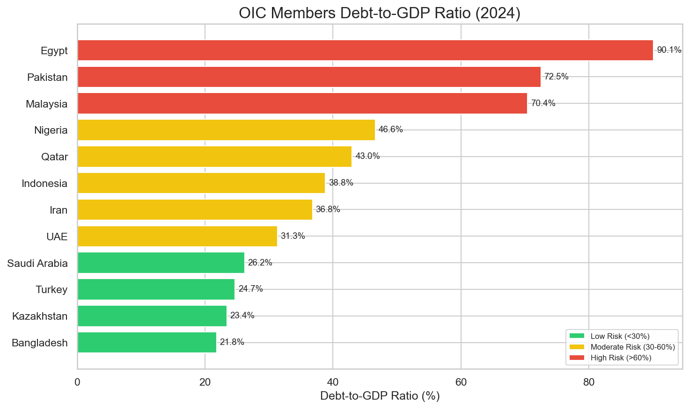

$6.3T+
Combined GDP (Top 12)
4.5%
Avg. Growth Rate
~38%
Avg. Debt Ratio
1.9B
Population Population
Economic Output by Member State

Top Performers
Indonesia ($1.4T), Saudi Arabia ($1.24T), and Turkey ($1.32T) are the clear economic engines, collectively accounting for over 60% of the group's top-tier output.
Debt Resilience
Ideally positioned with low debt ratios: Saudi Arabia (26%), Turkey (25%), and Kazakhstan (23%) show strong fiscal buffers.
Debt Sustainability Analysis
Green = Low Risk (<30%), Amber=Moderate (30-60%), Red=High (>60%)